Publication-Ready Themes and Journal Color Palettes
Source:vignettes/publication-themes.Rmd
publication-themes.RmdOverview
The zzlongplot package provides publication-ready themes
and color palettes specifically designed for major medical journals.
This vignette demonstrates the various themes available and shows how
they can be used to create professional, journal-ready figures.
Key Features
-
Complete journal styling with a single
themeparameter - Official color palettes from major medical journals (via ggsci package)
- Accessibility compliance with colorblind-friendly options
- Professional typography following journal guidelines
- Automatic color application with manual override capability
Sample Data
Let’s create a realistic clinical trial dataset to demonstrate the themes:
# Create comprehensive clinical trial dataset
set.seed(123)
n_subjects <- 90
n_visits <- 4
demo_data <- data.frame(
subject_id = rep(1:n_subjects, each = n_visits),
visit = rep(c(0, 4, 8, 12), times = n_subjects),
treatment = rep(c("Placebo", "Drug 10mg", "Drug 20mg"), each = n_visits * 30)
)
# Generate realistic clinical outcomes
for (subj in unique(demo_data$subject_id)) {
subj_rows <- which(demo_data$subject_id == subj)
treatment <- demo_data$treatment[subj_rows[1]]
# Baseline efficacy score
baseline <- 50 + rnorm(1, 0, 10)
# Treatment-specific efficacy improvements
if (treatment == "Placebo") {
effects <- c(0, 2, 3, 4) # Small placebo effect
} else if (treatment == "Drug 10mg") {
effects <- c(0, 8, 14, 18) # Moderate dose effect
} else { # Drug 20mg
effects <- c(0, 12, 22, 28) # High dose effect
}
# Generate data with realistic variability
demo_data$efficacy[subj_rows] <- baseline + effects + rnorm(4, 0, 8)
}
# Display data structure
str(demo_data)
#> 'data.frame': 360 obs. of 4 variables:
#> $ subject_id: int 1 1 1 1 2 2 2 2 3 3 ...
#> $ visit : num 0 4 8 12 0 4 8 12 0 4 ...
#> $ treatment : chr "Placebo" "Placebo" "Placebo" "Placebo" ...
#> $ efficacy : num 42.6 58.9 48 49.4 70.8 ...
head(demo_data, 12)
#> subject_id visit treatment efficacy
#> 1 1 0 Placebo 42.55382
#> 2 1 4 Placebo 58.86491
#> 3 1 8 Placebo 47.95931
#> 4 1 12 Placebo 49.42955
#> 5 2 0 Placebo 70.83798
#> 6 2 4 Placebo 59.03016
#> 7 2 8 Placebo 64.65583
#> 8 2 12 Placebo 67.58535
#> 9 3 0 Placebo 65.11933
#> 10 3 4 Placebo 67.44699
#> 11 3 8 Placebo 66.12628
#> 12 3 12 Placebo 61.79409Major Medical Journal Themes
New England Journal of Medicine (NEJM)
The NEJM theme provides professional, clinical styling with the journal’s official color palette.
p_nejm <- lplot(demo_data,
efficacy ~ visit | treatment,
cluster_var = "subject_id",
baseline_value = 0,
theme = "nejm",
title = "Clinical Efficacy Over Time",
subtitle = "NEJM Theme with Official Colors",
xlab = "Week",
ylab = "Efficacy Score (points)")
#> Warning: The `size` argument of `element_line()` is deprecated as of ggplot2 3.4.0.
#> ℹ Please use the `linewidth` argument instead.
#> ℹ The deprecated feature was likely used in the zzlongplot package.
#> Please report the issue at <https://github.com/rgt47/zzlongplot/issues>.
#> This warning is displayed once per session.
#> Call `lifecycle::last_lifecycle_warnings()` to see where this warning was
#> generated.
#> Warning: The `size` argument of `element_rect()` is deprecated as of ggplot2 3.4.0.
#> ℹ Please use the `linewidth` argument instead.
#> ℹ The deprecated feature was likely used in the zzlongplot package.
#> Please report the issue at <https://github.com/rgt47/zzlongplot/issues>.
#> This warning is displayed once per session.
#> Call `lifecycle::last_lifecycle_warnings()` to see where this warning was
#> generated.
p_nejm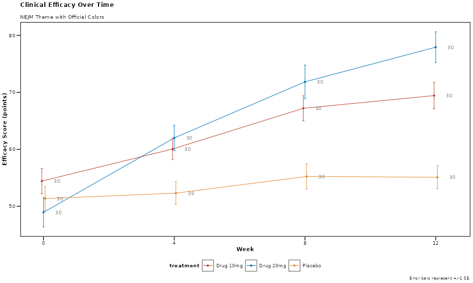
NEJM Theme Features: - Professional clinical appearance - Bold axis titles for clarity - Clean, no-grid design - Official NEJM color palette: Red (#BC3C29), Blue (#0072B5), Orange (#E18727)
Nature Publishing Group
The Nature theme follows Nature journal guidelines with modern, sophisticated styling.
p_nature <- lplot(demo_data,
efficacy ~ visit | treatment,
cluster_var = "subject_id",
baseline_value = 0,
theme = "nature",
title = "Clinical Efficacy Over Time",
subtitle = "Nature Theme with Official Colors",
xlab = "Week",
ylab = "Efficacy Score (points)")
p_nature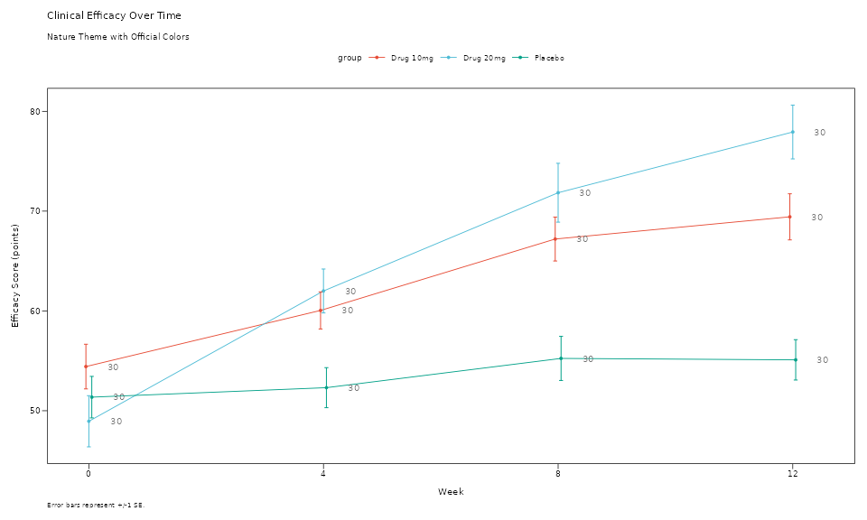
Nature Theme Features: - 7pt font size (Nature requirement) - Clean backgrounds with optional borders - Nature color palette: Cinnabar (#E64B35), Sky Blue (#4DBBD5), Persian Green (#00A087) - Professional scientific appearance
The Lancet
The Lancet theme provides distinctive styling with the journal’s recognizable color scheme.
p_lancet <- lplot(demo_data,
efficacy ~ visit | treatment,
cluster_var = "subject_id",
baseline_value = 0,
theme = "lancet",
title = "Clinical Efficacy Over Time",
subtitle = "Lancet Theme with Official Colors",
xlab = "Week",
ylab = "Efficacy Score (points)")
p_lancet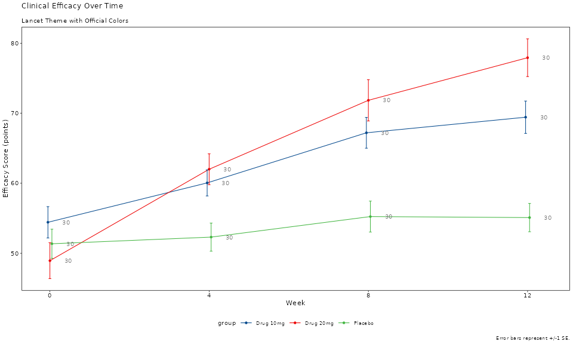
Lancet Theme Features: - Deep blue (#00468B) and Lancet red (#ED0000) signature colors - Professional medical journal styling - Clear data presentation optimized for clinical research
Journal of the American Medical Association (JAMA)
The JAMA theme offers conservative, professional styling appropriate for clinical publications.
p_jama <- lplot(demo_data,
efficacy ~ visit | treatment,
cluster_var = "subject_id",
baseline_value = 0,
theme = "jama",
title = "Clinical Efficacy Over Time",
subtitle = "JAMA Theme with Official Colors",
xlab = "Week",
ylab = "Efficacy Score (points)")
p_jama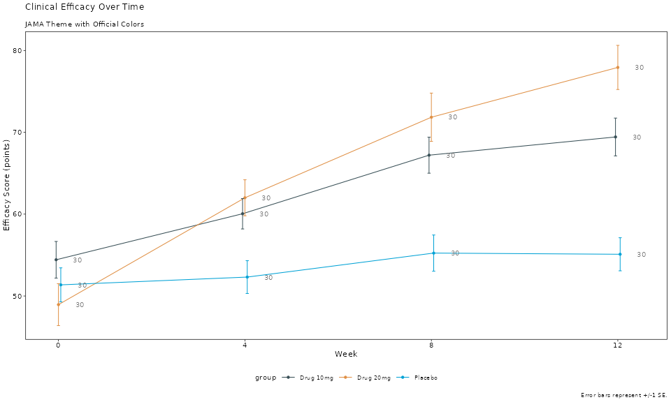
JAMA Theme Features: - Conservative color palette with dark blue-grey (#374E55) and orange (#DF8F44) - Professional typography suitable for medical publications - Clear, readable design for clinical data
Science (AAAS)
The Science theme provides modern scientific styling with the journal’s official color scheme.
p_science <- lplot(demo_data,
efficacy ~ visit | treatment,
cluster_var = "subject_id",
baseline_value = 0,
theme = "science",
title = "Clinical Efficacy Over Time",
subtitle = "Science Theme with Official Colors",
xlab = "Week",
ylab = "Efficacy Score (points)")
p_science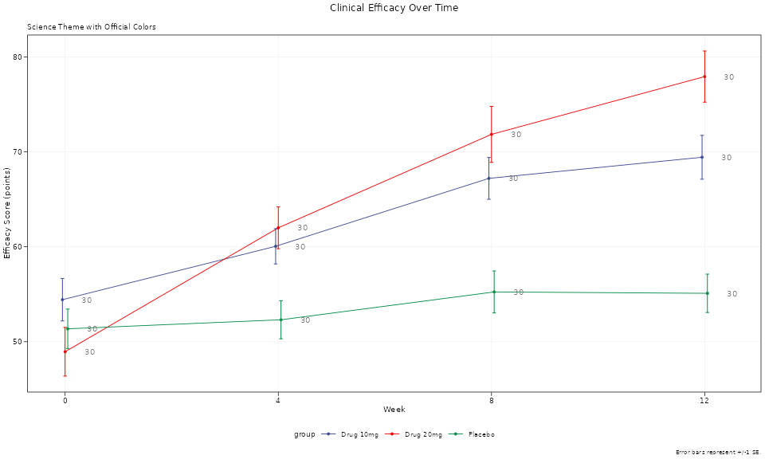
Science Theme Features: - 7pt font size (Science requirement) - Subtle grid lines for data reading - Science color palette: Deep blue (#3B4992), Red (#EE0000), Green (#008B45)
Journal of Clinical Oncology (JCO)
The JCO theme is specifically designed for oncology and clinical research publications.
p_jco <- lplot(demo_data,
efficacy ~ visit | treatment,
cluster_var = "subject_id",
baseline_value = 0,
theme = "jco",
title = "Clinical Efficacy Over Time",
subtitle = "JCO Theme with Official Colors",
xlab = "Week",
ylab = "Efficacy Score (points)")
p_jco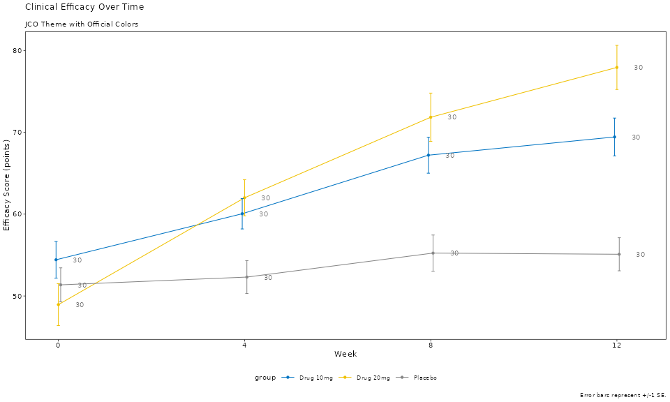
JCO Theme Features: - Clinical blue (#0073C2) and yellow (#EFC000) color scheme - Designed specifically for oncology research - Professional medical styling
Regulatory and Clinical Themes
FDA Regulatory Theme
The FDA theme provides high-contrast styling suitable for regulatory submissions.
p_fda <- lplot(demo_data,
efficacy ~ visit | treatment,
cluster_var = "subject_id",
baseline_value = 0,
theme = "fda",
title = "Clinical Efficacy Over Time",
subtitle = "FDA Theme for Regulatory Submissions",
xlab = "Week",
ylab = "Efficacy Score (points)")
p_fda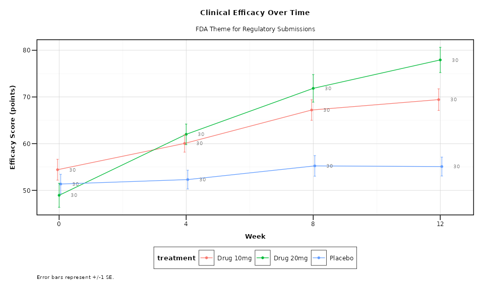
FDA Theme Features: - High contrast for regulatory review - 10pt font size for readability - Grid lines for precise data reading - Conservative, professional appearance
Theme Comparison
Let’s create a comprehensive comparison showing multiple themes side by side:
# Create simplified plots for comparison
create_comparison_plot <- function(theme_name, title_suffix) {
lplot(demo_data,
efficacy ~ visit | treatment,
cluster_var = "subject_id",
baseline_value = 0,
theme = theme_name,
title = paste("Efficacy Analysis -", title_suffix),
xlab = "Week",
ylab = "Efficacy (pts)")
}
# Create all theme variations
p1 <- create_comparison_plot("nejm", "NEJM")
p2 <- create_comparison_plot("nature", "Nature")
p3 <- create_comparison_plot("lancet", "Lancet")
p4 <- create_comparison_plot("jama", "JAMA")
p5 <- create_comparison_plot("science", "Science")
p6 <- create_comparison_plot("jco", "JCO")
# Arrange in grid
(p1 + p2 + p3) / (p4 + p5 + p6)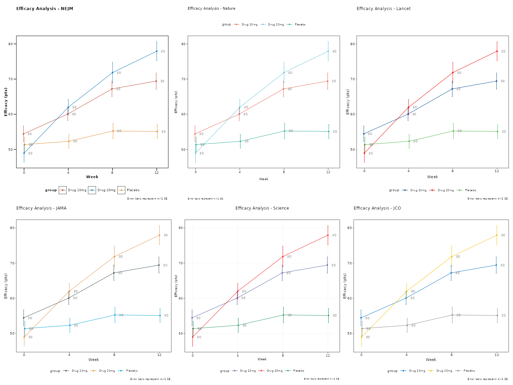
Using Error Bands vs Error Bars
All themes work with both error bars and error bands. Here’s a comparison:
# Error bars (default)
p_bars <- lplot(demo_data,
efficacy ~ visit | treatment,
cluster_var = "subject_id",
baseline_value = 0,
theme = "nature",
error_type = "bar",
jitter_width = 0.15,
title = "Error Bars with Jitter",
xlab = "Week",
ylab = "Efficacy Score")
# Error bands
p_bands <- lplot(demo_data,
efficacy ~ visit | treatment,
cluster_var = "subject_id",
baseline_value = 0,
theme = "nature",
error_type = "band",
title = "Error Bands (Ribbons)",
xlab = "Week",
ylab = "Efficacy Score")
p_bars + p_bands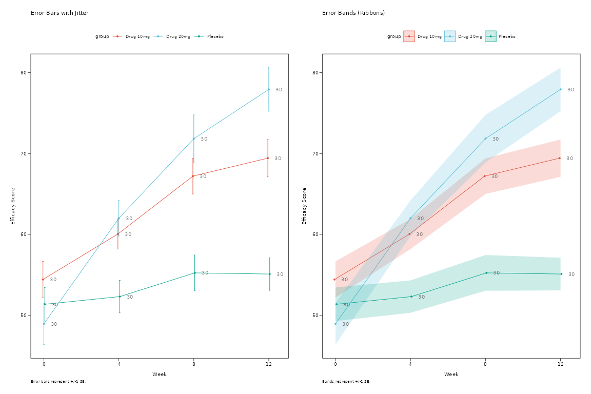
Ribbon Customization
You can customize the appearance of error bands (ribbons) with transparency and fill color controls:
# Create data with some variability for ribbon demonstration
ribbon_demo <- data.frame(
subject_id = rep(1:25, each = 4),
visit = rep(c(0, 4, 8, 12), times = 25),
efficacy = rnorm(100, mean = rep(c(50, 55, 60, 65), times = 25), sd = 8),
treatment = rep(c("Control", "Treatment"), each = 50)
)
# Default ribbons
p_ribbon_default <- lplot(ribbon_demo, efficacy ~ visit | treatment,
cluster_var = "subject_id", baseline_value = 0,
error_type = "band",
theme = "nature",
title = "Default Ribbons (Alpha = 0.2)",
xlab = "Week", ylab = "Efficacy Score")
# Custom transparency
p_ribbon_alpha <- lplot(ribbon_demo, efficacy ~ visit | treatment,
cluster_var = "subject_id", baseline_value = 0,
error_type = "band", ribbon_alpha = 0.5,
theme = "nature",
title = "Higher Transparency (Alpha = 0.5)",
xlab = "Week", ylab = "Efficacy Score")
# Custom fill color
p_ribbon_fill <- lplot(ribbon_demo, efficacy ~ visit | treatment,
cluster_var = "subject_id", baseline_value = 0,
error_type = "band",
ribbon_alpha = 0.4, ribbon_fill = "lightsteelblue",
theme = "nature",
title = "Custom Fill Color + Alpha",
xlab = "Week", ylab = "Efficacy Score")
# Very transparent for subtle effect
p_ribbon_subtle <- lplot(ribbon_demo, efficacy ~ visit | treatment,
cluster_var = "subject_id", baseline_value = 0,
error_type = "band", ribbon_alpha = 0.1,
theme = "nature",
title = "Subtle Ribbons (Alpha = 0.1)",
xlab = "Week", ylab = "Efficacy Score")
# Arrange ribbon examples
(p_ribbon_default + p_ribbon_alpha) / (p_ribbon_fill + p_ribbon_subtle)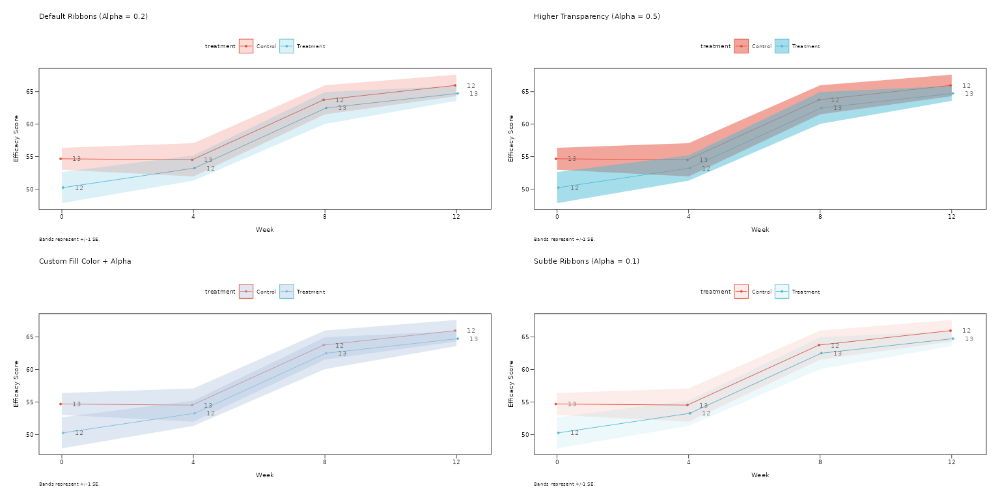
Ribbon Parameters:
-
ribbon_alpha: Controls transparency (0 = fully transparent, 1 = fully opaque)- Default: 0.2 for subtle background effect
- Higher values (0.4-0.6) for more prominent error regions
- Lower values (0.1-0.2) for subtle confidence regions
-
ribbon_fill: Controls fill color- Default:
NULLuses group colors automatically - Custom colors:
"lightblue","gray90","#E8F4F8", etc. - Useful for creating consistent ribbon colors across groups
- Default:
Summary Statistics Options
The zzlongplot package supports multiple summary
statistics to display your data:
# Create test data with some variability
set.seed(42)
n_subjects <- 40
stats_demo <- data.frame(
subject_id = rep(1:n_subjects, each = 4),
visit = rep(c(0, 4, 8, 12), times = n_subjects),
efficacy = c(
rnorm(n_subjects, mean = 50, sd = 8), # baseline
rnorm(n_subjects, mean = 52, sd = 9), # visit 4
rnorm(n_subjects, mean = 55, sd = 10), # visit 8
rnorm(n_subjects, mean = 58, sd = 11) # visit 12
),
treatment = rep(c("Placebo", "Treatment"), each = 80)
)
# Mean ± 95% CI
p_mean_ci <- lplot(stats_demo, efficacy ~ visit | treatment,
cluster_var = "subject_id", baseline_value = 0,
summary_statistic = "mean", confidence_interval = 0.95,
theme = "nature",
title = "Mean ± 95% CI",
xlab = "Week", ylab = "Efficacy Score")
# Mean ± SE (Standard Error)
p_mean_se <- lplot(stats_demo, efficacy ~ visit | treatment,
cluster_var = "subject_id", baseline_value = 0,
summary_statistic = "mean_se",
theme = "nature",
title = "Mean ± SE",
xlab = "Week", ylab = "Efficacy Score")
# Median + IQR (Interquartile Range)
p_median <- lplot(stats_demo, efficacy ~ visit | treatment,
cluster_var = "subject_id", baseline_value = 0,
summary_statistic = "median",
theme = "nature",
title = "Median + IQR",
xlab = "Week", ylab = "Efficacy Score")
# Boxplot summary (Actual boxes + whiskers)
p_boxplot <- lplot(stats_demo, efficacy ~ visit | treatment,
cluster_var = "subject_id", baseline_value = 0,
summary_statistic = "boxplot",
theme = "nature",
title = "Boxplots",
xlab = "Week", ylab = "Efficacy Score")
# Arrange all plots
(p_mean_ci + p_mean_se) / (p_median + p_boxplot)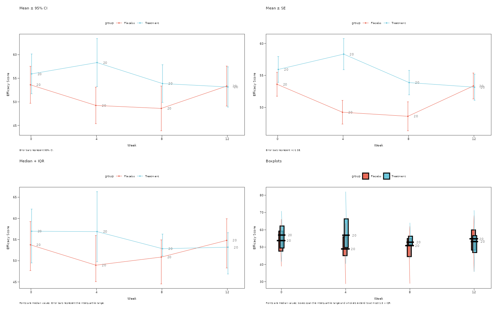
Summary Statistics Guide
When to use each option:
-
summary_statistic = "mean"(default):- Uses mean as central tendency
- Error bounds: CI when
confidence_intervalspecified, otherwise SE - Best for: Normally distributed data, regulatory submissions
-
summary_statistic = "mean_se":- Always uses mean ± standard error
- More conservative than CI, faster to compute
- Best for: Quick exploratory analysis, when SE preferred over CI
-
summary_statistic = "median":- Uses median as central tendency with IQR bounds (25th-75th percentiles)
- Robust to outliers
- Best for: Skewed data, non-parametric analysis
-
summary_statistic = "boxplot":- Creates actual boxplots with rectangular boxes showing IQR
- Median line within each box, whiskers extend to 1.5 × IQR
- Shows full data distribution and identifies outliers
- Best for: Exploring data distribution, identifying outliers
Accessibility and Color Options
Colorblind-Friendly Alternative
You can override journal colors with colorblind-friendly palettes:
# Use journal theme but override with accessible colors
p_accessible <- lplot(demo_data,
efficacy ~ visit | treatment,
cluster_var = "subject_id",
baseline_value = 0,
theme = "nejm", # NEJM typography
treatment_colors = "standard", # Colorblind-friendly treatment colors
title = "NEJM Theme + Colorblind-Friendly Colors",
xlab = "Week",
ylab = "Efficacy Score")
p_accessible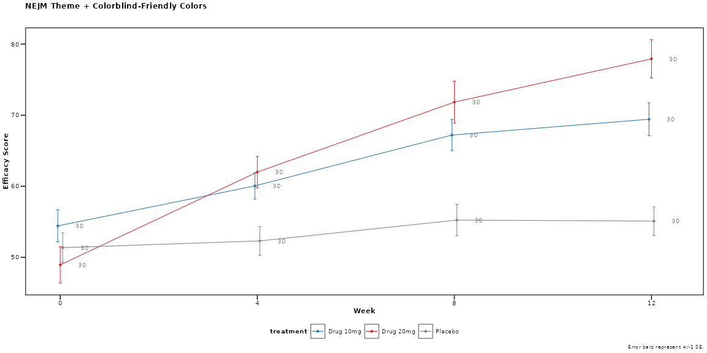
Available Color Palette Options
# Journal-specific palettes (auto-applied with themes)
lplot(data, form, theme = "nejm") # NEJM colors
lplot(data, form, theme = "nature") # Nature colors
lplot(data, form, theme = "lancet") # Lancet colors
# Clinical palettes (manual specification)
lplot(data, form, treatment_colors = "standard") # Clinical trial colors
lplot(data, form, color_palette = clinical_colors("severity")) # Severity progression
lplot(data, form, color_palette = clinical_colors("fda")) # FDA high-contrast
# Custom color vectors
lplot(data, form, color_palette = c("#FF0000", "#00FF00", "#0000FF"))Usage Recommendations
For Different Journal Submissions
-
NEJM: Use
theme = "nejm"for clinical trials and medical research -
Nature/Science: Use
theme = "nature"ortheme = "science"for basic research -
Lancet: Use
theme = "lancet"for clinical and epidemiological studies -
JAMA: Use
theme = "jama"for clinical medicine and healthcare research -
JCO: Use
theme = "jco"for oncology and cancer research
Summary
The zzlongplot package provides comprehensive theming
options for medical and scientific publications:
- 6 major journal themes with official color palettes
-
Automatic styling with single
themeparameter
- Accessibility compliance with colorblind-friendly options
- Professional typography following journal guidelines
- Flexible customization with manual color overrides
Choose the appropriate theme based on your target journal or regulatory requirement, and the package will automatically apply the correct styling and colors for publication-ready figures.